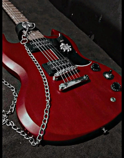
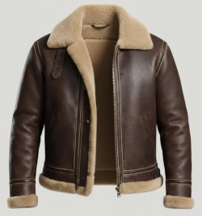
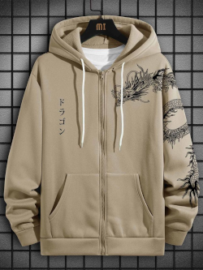

Itens
Guitarra
- Quantidade: 1
- Espaço: 2
- Categoria: 1
- Efeito: Um instrumento de 6 cordas de som viciante junto a um amplificador portátil. Ao relaxar, você pode realizar teste de Artes DT 15 e se passar, os pontos de sanidade são dobrado. Se falhar, recebe apenas metade dos pontos de sanidade que normalmente receberia. A guitarra só pode ser usada uma vez em ação de interlúdio
- Historia:Guitarra que recebi do Tapio. Ganhei essa guitarra após recuperar uma placa pequena que o pai de Tapio deixou antes de deixar seu filho pra trás, mesmo sendo abandonado Tapio por algum motivo queria essa placa de volta (Encontrei ela com uma cara que mora nas ruas da cidade [Não lembro o nome])

Proteção Leve
- Quantidade: 1
- Espaço: 2
- Categoria: 1
- Efeito: +5 na defesa base
- Historia:Peguei da G.E.P quando ainda fazia parte dela, achei o estilo dela muito foda então acabei pegando pra mim e não vou devolver

Casaco Campbell
- Quantidade: 1
- Espaço: 2
- Categoria: 1
- Efeito: Nenhum
- Historia:Ultima lembrança que eu tenho da minha mãe, utilizava como proteção contra criaturas e pessoas, porém agora está aposentado e guardado apenas com uma memoria e o lembrete da promessa que eu fiz
